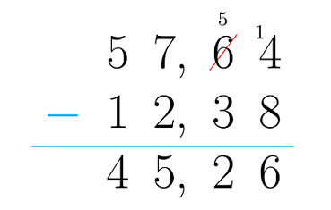
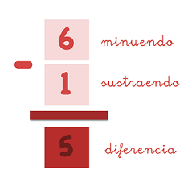
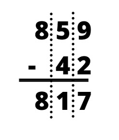

La resta (también conocida como sustracción) es una de las cuatro operaciones básicas de la aritmética que consiste en la diferencia entre una cierta cantidad con respecto a otra.
La representación o signo de la resta es mediante una línea intermedia o guion “-” que se le conoce como “menos” o “negativo”.
Las partes en las que se divide la resta son:
Minuendo: es el número primero, es el número al que le restan, debe ser el número mayor.
Sustraendo: es el número que resta, debe ser el número menor.
Diferencia: es el resultado de la resta.
Ejemplos ilustrativos:



En las restas cada número, el de arriba y el de abajo reciben un nombre, del mismo modo que el resultado. El número colocado en la parte posterior, o al que hay que restarle, recibe el nombre de minuendo (porque es al que le vas a quitar);
el de abajo, se llama sustraendo, porque es la cantidad que le estás quitando a la primera; y el resultado de restar el minuendo menos el sustraendo, da como resultado la diferencia. Así que de aquí en adelante el minuendo (parte de arriba)
-sustraendo (parte de abajo) = diferencia (resultado).
Procedimiento para restar:
Escribe el número mayor
Escribe el número menor justo debajo del primero
En la columna de las unidades, resta el número que se encuentra en la parte inferior del que está en la parte superior.
En la columna de las decenas, resta el número que se encuentra en la parte inferior del que está en la superior.
Revisa la operación
Propiedades de la resta
Sustraendo: Esta propiedad nos indica que al aumentar el valor del sustraendo el resultado(diferencia) disminuye, por lo tanto, al disminuir el valor del sustraendo el resultado(diferencia) aumenta.
Uniformidad: Al variar proporcionalmente el minuendo y el sustraendo la diferencia se mantendrá.